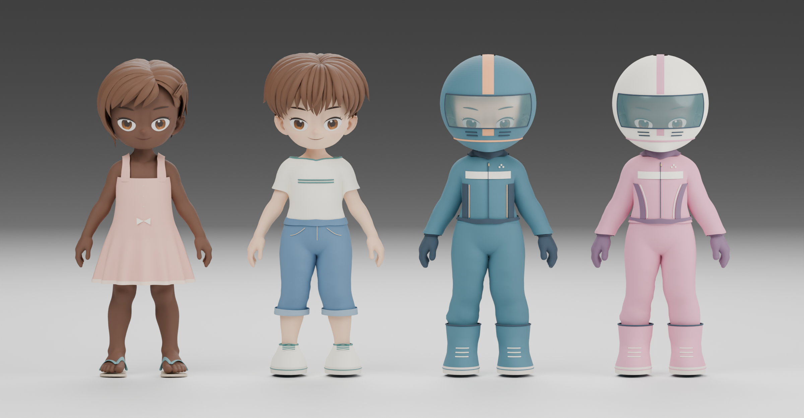

TrainerOS · Примерка новых моделейНа каждый день.
И на старт.
Цельный сарафан со складочками и джинсовые бриджи с футболкой — два стартовых образа. Для гонок — два комбинезона со шлемами, перчатками и ботинками; второй с более мягким силуэтом и молочно-розовой отделкой.

Кадры сняты с настоящих 3D-моделей. Это примерка для оценки внешнего вида. Выдача стартовых вещей, подключение к установленному гардеробу и проверка игровых движений ещё впереди.